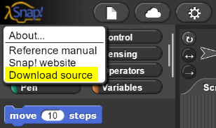

Introduction to Computer Science¶
Welcome to the TEALS Intro CS Curriculum!
The Introduction to Computer Science curriculum is a flexible and approachable course adapted from the UC Berkeley CS 10, and is course for a wide range of high school students from diverse backgrounds. The course has been successfully implemented in hundreds of high schools. Introduction to Computer Science is an engaging course that explores a variety of basic computational thinking and programming concepts through a project-based learning environment. Every unit culminates in a comprehensive project and roughly 75% of student time is spent building projects and practicing the skills they are learning.
Visual and approachable¶
This course uses Snap!, an approachable visual block-based programming language with a robust tool set, perfect for introducing students to coding for the first time.
GitHub: https://github.com/TEALSK12/introduction-to-computer-science/
Github Page: https://tealsk12.github.io/introduction-to-computer-science/
Introduction to Computer Science Implementation Options¶
The Introduction to CS course can be offered as a semester-long course offered twice in a single school year or as a year-long course with an expanded curriculum. The year-long class transitions to text-based programming using the beginner-friendly Python language in the second semester. Teachers participating in the TEALS Program can use the following options:
About this curriculum¶
Philosophy¶
This curriculum has been designed by the TEALS program to support computer science teachers and/or volunteer professionals teaching an introductory computer science course in a high school classroom. The curriculum is based on, and borrows heavily from, the Beauty and Joy of Computing Curriculum developed at the University of California, Berkeley. The TEALS curriculum has a heavier focus on the basic programming components of the course than BJC, sacrificing some of the advanced programming and conceptual topics that are less appropriate in an introductory high school classroom.
This curriculum advocates a “hands-on” learning approach in which students’ primary means of learning is through discovery, experimentation, and application. To that end, each unit is built around a large, culminating, programming project that exercises the objectives of the unit. In addition, nearly all lessons in the curriculum include a guided activity of some kind to allow students to practice with and experience the concepts covered in the lesson first-hand. Taken together, the lessons provide the skills and support necessary to enable students to complete the project and demonstrate mastery of the unit’s objectives. Substantial class time should be provided for the project in each unit to ensure students have the opportunity to demonstrate mastery of the skills from each unit before moving on.
Because this curriculum was designed to be used in a wide variety of classrooms, we have made as few assumptions as possible. In particular, the curriculum does not depend on any specific technologies or resources in the classroom other than computers with reliable internet access. This curriculum is also designed without any student homework assignment, as not all classes will have students who can reliably access a computer with internet access at home. For classes where home computer access is not an issue, some amount of lab work can be reassigned as homework.
Resources¶
This curriculum is designed for use with the Snap! programming language designed at the University of California, Berkeley. Snap! is a visual programming language designed to allow students to focus on concepts and skills rather than syntax when learning to program. Snap! is an extension and reimplementation of Scratch, designed at MIT, and many Scratch lessons and programs can be easily adapted to Snap! The following resources are available to support use of Snap! in this curriculum:
Snap! examples and extensions (including using hardware devices with Snap!):
Snap! Mirrors¶
Access to Snap! is necessary for students to complete the labs. The main Snap! site has been known to be inaccessible due to system updates or network outages. It is important to have contingency plans in the event the web site is unreachable. Here is a list of mirror sites that can be used in the event the main site is unreachable. In addition, Snap! can be downloaded to run locally on a student’s computer, however the projects will not be able to be save to the cloud and will need to be exported and then imported to the cloud when Snap! becomes available.
The Berkeley Snap! is located at: http://snap.berkeley.edu/
The following are mirror sites:
Download a local copy of Snap! as a backup:
Run Snap! from browser
Click on the Snap! logo in the upper-left of the app.
Choose “Download source” from the menu

Save snap.zip locally on your computer.
Extract snap.zip.
Open snap.html in a web browser.
Using this curriculum¶
Semester pacing¶
The TEALS Intro CS curriculum is designed for a semester-long introductory course meeting daily for 55 minute periods. A course that meets these criteria is expected to have roughly 90 class meetings in a semester. However, the TEALS curriculum in its current form includes an estimated 102 days of material. First and foremost, teachers should be reminded that the pacing in the curriculum is intended as a guideline and teaching teams are encouraged to make any adjustments they deem appropriate or necessary. However, there are certain aspects of the curriculum that are vital to maintain. In particular, the following should be considered when making pacing adjustments:
Lab Days¶
The number of lab days allotted for each project is an estimate for a typical class. Classes that are moving quickly, or classes in which most students are able to do work outside of class, can reduce the number of in-class lab days. If this route is taken, be certain that students still have enough time available to complete the projects. As the projects are the primary summative assessments in this course, it is vital that students not be rushed through completion of the project and that requirements are not cut in an attempt to shorten the time necessary.
Culture Days¶
Culture Days (see below) are included in the curriculum roughly once every two weeks. While it may be tempting to reduce the number of culture days, or remove them entirely, to gain back class days, these lessons are considered central to the student experience in this course. If an extra day or two are needed, culture days may be skipped on occasion, but teaching teams are advised to avoid making a habit of skipping culture days.
Pacing Considerations¶
Unit 5 (Optional)¶
It is expected that many teams will find it necessary to remove some or all of Unit 5 from the curriculum. This unit covers cloning and prototyping, an interesting and worthwhile, though advanced topic. If time allows, teaching teams are encouraged to attempt to include at least part of this unit, possibly with a simplified version of the project, in their curriculum. But this unit can be removed without having too adverse an impact on the student experience, and should be the first major cut if one is necessary.
Unit 6 (Preserved)¶
The capstone experience for the course, Unit 6 enables students to apply the skills they have learned in a large-scale, individualized project setting. Cutting this unit would deprive students of the opportunity to experience a close approximation of a real-world development setting. Earlier units should be condensed or cut as necessary to ensure that Unit 6 is still included in the curriculum.
Daily lesson plans¶
Most lesson plans in this curriculum are designed to represent a single 55-minute class period with average pacing. Each class will have slightly different needs, possibly including different period length, student capabilities, classroom interruptions, and more. Teachers and volunteers are encouraged to consider the lesson plans as guidance for one possible use of time to present the material, and to feel free to adapt the lesson plans as necessary to fit the needs of the particular class in which the plans are being applied.
With a few exceptions, each daily lesson plan consists of the following components:
Welcome/Announcements/Bell work
Five minutes are allotted at the beginning of each day for administrative tasks such as taking attendance, giving announcements, returning work, or other necessary actions. During this time, teachers are encouraged to assign “bell work” (sometimes called “do now” activities) for students to work on.
These activities aim to engage students with the subject immediately upon entering the room, and should be short, clear, and able to be completed by all students.
Specific “do now” activities are not given in the lesson plans, as they should be chosen by the teacher to reinforce or preview the specific topics with which students have or are expected to struggle most.
Instruction/Discussion
Most lessons begin with a brief period of instruction on the topic of the day. These sections should be kept as brief as possible—the primary means of student learning in most lessons will be the lab activities.
The goals of the instruction section of the lesson should be to motivate the concepts being exercised in the lab and to provide a short demonstration to help students find the necessary parts of Snap! the first time.
Teaching teams should vary the ways in which the instruction is presented throughout the course, including class discussions, kinesthetic activities, demonstrations, Socratic seminars, occasional lectures, and other approaches.
Activity
The largest portion of time in each lesson is dedicated to a guided activity that allows students to explore and practice with the day’s key topics. Each activity is broken down into several parts, each of which consists of several steps. In general, the steps in a single section build on each other, and each section covers a new topic or new application.
It is intended that the labs be well enough structured for students to work through on their own, but teachers should feel free to interject at appropriate points to assess student progress and provide additional guidance as necessary.
On occasion, steps 3 and 4 are repeated for multi-part activities.
Debrief
After each activity has concluded, time is allotted for teachers to review and debrief the activities with students. In general, there is not enough time, nor is there necessarily the need, to go through the lab step-by-step. Students should be able to at least partially assess their own progress by verifying that their programs function as specified in the lab.
Rather than presenting solutions to each step of the lab, teachers are encouraged to use the debrief time to focus on particularly tricky or noteworthy parts of the lab or to discuss areas in which students struggled.
Debrief time can also be used to compare and contrast different possible approaches to some of the problems, emphasizing that, in most cases, there is more than one valid solution.
Whenever possible, use examples of student work rather than instructor-created solutions during the debrief—this is an excellent chance to showcase students who solve problems in elegant, creative, or canonical ways.
Special lesson plans¶
The curriculum includes a few special lesson plans that are intended to be applied at multiple times during the semester. These lesson plans are templates for a particular type of lesson, though the specific topics will vary each time the plan is used.
These special plans include:
Lab Day Lesson¶
This lesson plan provides structure for a typical “lab day” (a class day in which students are primarily working on a larger-scale project).
The lab day lesson plan will most often be used during the culminating project of each unit, but can also occasionally be used for larger lab activities that require being split over multiple days.
The lab day lesson provides a basic structure for reviewing and reinforcing important concepts before providing time for students to work independently.
The lesson also provides recommendations for how to deal with questions and struggling students, and how to gauge student progress over the course of a project.
Culture Day Lessons¶
These lesson plans provide the basic outline for possible types of “culture days” (class days in which cultural, social, societal, or other topics not directly related to programming are covered).
These days are vital to the experience of this course, as they provide opportunities for students to connect the skills and concepts they are learning to real-world problems, view their society and culture through the lens of technology, and get glimpses of the types of problems and applications that they could encounter in further study of computer science.
These lessons also provide an outstanding opportunity for students to bring their own personal experiences or knowledge into the classroom.
Each culture day lesson plan provides a high-level structure for conducting one of several different forms of a culture day.
Suggested topics are provided, but teaching teams are encouraged to choose topics that are both of interest to their students and that play to the strengths of the instructors.
These lessons may require more preparation than the typical lesson to adapt the plan to the particular topic chosen.
Homework¶
This curriculum does not assign homework as part of its typical lessons. Because this curriculum is intended to be used in a wide variety of classrooms, some of which may include students that do not have regular access to an internet-enabled computer at home, all work is done during class time. In some circumstances, assigning some lab activities as homework can enable the teaching team to regain in-class time for additional lessons or activities, but this must be done with care. In particular, if homework is assigned, arrangements must be made so that any students who do not have the ability to complete the homework at home do not fall behind. Further, it should be expected that some students will not complete the assigned homework and teaching teams must have a way to both assess that homework was completed and ensure the material is reinforced briefly in class.
Quizzes¶
To gauge student understanding, the addition of Unit quizzes has been added. These are intended as low stakes formative assessments that allow students to visit topics at the end of the unit to reinforce learning. They are open book giving students incentive to take good notes. Ideally the quizzes are non-graded and students would reflect on the answers they got wrong in order to learn from their mistakes.
Grading¶
Student work consists of class participation, daily labs, end of unit projects, and final project. Each classroom teacher is responsible for determining the grading breakdown for their classes. TEALS recommends the following as a starting point as grading guidelines for the introductory computer science course.
Percentage |
Description |
|---|---|
40 |
Daily Labs |
40 |
Projects and Large-Scale Labs |
20 |
Participation, Notebooks, etc. |
Updates and contributions¶
This curriculum is considered a living document and is intended to be updated regularly both by the TEALS team and with contributions from the TEALS community. In particular, feedback on teaching teams’ experiences in conducting the lessons in this curriculum is always welcome. Teaching teams are also encouraged to share ideas for additional activities, lessons, or projects that can be incorporated into the curriculum guide. Please see the Contributing page for more information about how to contribute to the curriculum.
How to build the course documentation¶
The
Printing¶
The Introduction to Computer Science can be printed by navigating to https://aka.ms/TEALSIntroPDF. However, the “Download” button does not work. There is workaround depending on the browser:
click on the document to enable the pdf menu to show and clicking the down arrow or “Save as Copy”
right click on the .pdf document and select “Save As”